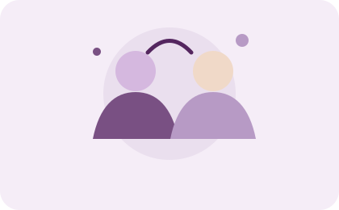
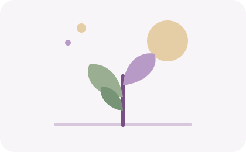
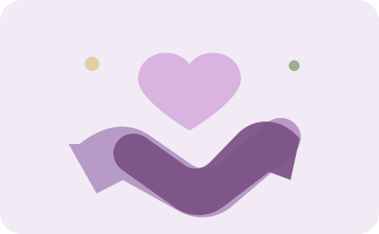

Atención psicológica individual
Un espacio personal para explorar emociones, dificultades y objetivos de bienestar.
Ver servicios ↗PSICOLOGÍA · ACOMPAÑAMIENTO · BIENESTAR
Tu bienestar emocional importa. Encuentra un espacio de escucha, comprensión y herramientas para afrontar los desafíos de la vida a tu propio ritmo.
CONOCE MI TRABAJO
UN ESPACIO PARA TI
La terapia puede ser una oportunidad para comprender lo que sientes, reconocer tus recursos y encontrar nuevas maneras de afrontar situaciones difíciles.
Conoce a Ruth Chavac →ACOMPAÑAMIENTO
Un espacio personal para explorar emociones, dificultades y objetivos de bienestar.
Ver servicios ↗Reconoce tus emociones y desarrolla recursos para afrontar el estrés y los cambios.
Ver servicios ↗Explora tus fortalezas, necesidades y límites para construir una relación más amable contigo.
Ver servicios ↗Un espacio para ordenar inquietudes y valorar posibles pasos ante una situación concreta.
Ver servicios ↗DA EL PRIMER PASO
Consulta disponibilidad y solicita una cita.
¿Tienes dudas? Contáctame aquí
BIENESTAR COTIDIANO
Ideas sencillas para recordar que el autocuidado también forma parte del bienestar emocional.

Expresar lo que sentimos puede ayudarnos a ordenar pensamientos y reconocer necesidades.

Respirar, descansar y atender el momento presente son pequeñas formas de cuidarnos.

Pedir orientación cuando lo necesitamos es un acto de cuidado, no una debilidad.